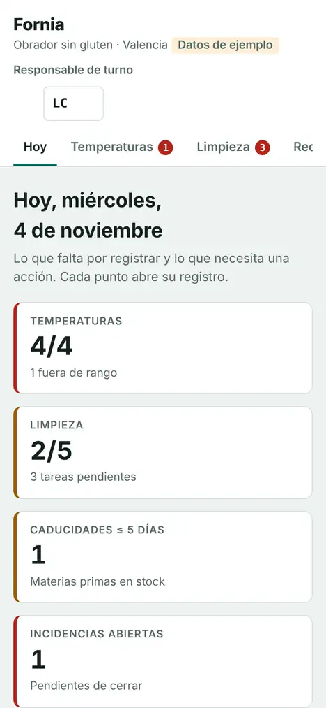
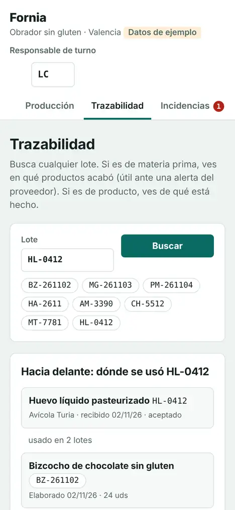
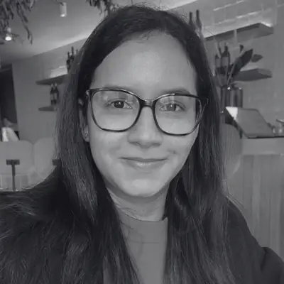

Por registro
Una temperatura, una limpieza o una recepción se apuntan en menos de 30 segundos, con la hora y las iniciales de quien lo hace.
APPCC digital para obradores
Tu equipo registra temperaturas, limpiezas, recepciones y lotes desde el móvil en segundos. Si algo falla, Fornia te avisa. Y ante una inspección o una alerta de un proveedor, lo tienes todo a un clic.
Te la enseño en tu obrador, sin compromiso. Sin instalar nada: funciona en cualquier móvil, tablet u ordenador.
Pensado para
Por qué Fornia
Una temperatura, una limpieza o una recepción se apuntan en menos de 30 segundos, con la hora y las iniciales de quien lo hace.
Nada se puede borrar ni modificar. Si algo sale mal, Fornia pide la acción correctiva y abre una incidencia. Es lo que quiere ver un inspector.
De un lote de materia prima a los productos que lo llevan, y al revés. Si un proveedor avisa de un lote, sabes al momento qué retirar.
Cómo funciona
Fornia no es solo una app: te acompaña una técnica de calidad que la adapta a tu plan APPCC.
Voy a tu obrador, revisamos cómo llevas hoy los registros y tu plan APPCC.
Dejo dadas de alta tus cámaras con sus rangos, tus tareas de limpieza y a tu equipo.
Tu equipo registra desde el móvil. La pantalla Hoy dice qué falta y qué necesita atención.
Sacas los registros de cualquier fecha en segundos, listos para el inspector o para Excel.
Todo en un sitio

Pensado para obradores sin gluten
Si tu obrador es sin gluten, Fornia vigila por ti en cada paso.
Precios
desde 150 € pago único
desde 29 € al mes por local
desde 40 € al mes, opcional
Pruébalo antes de decidir: la demo es gratis y sin registro, y el primer mes de cuota también es gratis.
Pruébala tú mismoPrecios sin IVA. Descuento para varios locales. Puedes darte de baja cuando quieras y te entrego todos tus registros.

Quién está detrás
Soy ingeniera química y técnica de calidad. He trabajado más de tres años en control de calidad en planta, gestionando no conformidades y trazabilidad, y conseguí reducir las mermas un 15 %.
También soy la fundadora de Wild Gluten Free, una marca de alimentación sin gluten. Sé lo que es elaborar con alérgenos, cuidar cada lote y preparar una inspección. Por eso creé Fornia: la herramienta que me habría gustado tener.
Además desarrollo software desde 2022, así que Fornia está hecha y mantenida por la misma persona que te la configura. Estoy en Valencia y voy en persona a tu obrador.
Preguntas frecuentes
Si usan WhatsApp, pueden usar Fornia: son botones grandes y pocos datos. El día de la puesta en marcha les doy una formación de 15 minutos.
La normativa pide que los registros existan, estén al día y sean fiables, no que estén en papel. Fornia guarda quién, cuándo y qué se hizo, no permite borrar registros y te los da por fechas cuando te los pidan.
En servidores en la Unión Europea. Cada obrador solo ve sus propios datos, con usuario y contraseña para cada persona.
No. Fornia funciona en el navegador del móvil, la tablet o el ordenador. Puedes añadirla a la pantalla de inicio para abrirla como una app. Necesita conexión a internet; vale la del móvil.
No se borra: se añade el registro correcto o una incidencia que explica el error. Es justo lo que da confianza a un inspector.
Me avisas con 15 días y te entrego todos tus registros en Excel. No hay permanencia.
Pide tu demo
Déjame tus datos y te escribo para quedar el día que mejor te venga. La visita dura unos 20 minutos y es sin compromiso.
¿Prefieres llamar? +34 670 06 29 98 · hola@fornia.es